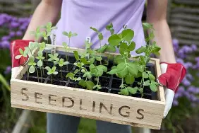
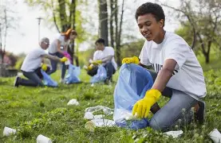
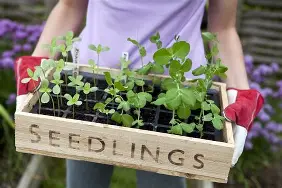
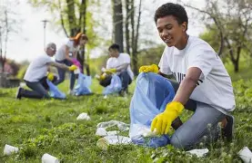

About Green Roots Gardening Club
Green Roots Gardening Club is a vibrant community of gardening enthusiasts in Accra, Ghana.
Our mission is to promote eco-friendly gardening, foster local collaboration, and encourage sustainable growth in our neighborhoods.

Our Story
Founded in 2022, Green Roots Gardening Club began as a small group of friends passionate about plants and the environment. Today, we have grown into a diverse club that welcomes gardeners of all skill levels. We organize workshops, community cleanups, plant exchanges, and seasonal celebrations.
Our Values
- 🌱 Eco-conscious gardening practices
- 🤠Community collaboration and support
- 📚 Education and sharing knowledge
- 🌠Respect for nature and biodiversity
- 🌻 Inclusivity and diversity among members
- 🧑‍🤝‍🧑 Volunteering and giving back to the community
- 🌦️ Adaptability and resilience in gardening
- 💡 Innovation in sustainable techniques
- 🪴 Promoting mental and physical well-being through gardening
Meet Our Team
 David Sarbutey
David SarbuteyClub President
Harriet Choice
Events Coordinator
Events Coordinator
Kofi Boateng
Outreach Lead
Outreach Lead
Efua Owusu
Social Media
Social Media
Gallery

 


